전자기기기능사 (2003-03-30 기출문제)
1과목: 전기전자공학
1. 톱니파 발생회로와 무관한 것은?
- 멀티바이브레이터
- 블로킹발진기
- UJT발진기
- LC발진기
(정답률: 50%)

2. 그림과 같은 회로는?
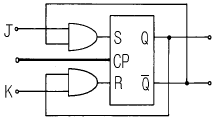
- RST플립플롭
- ＪK플립플롭
- D플립플롭
- T플립플롭
(정답률: 69%)
3. 부울대수식 중 성립하지 않은 것은?
- A+1=A
- A·0=0
- A+A=A
- 1·A=A
(정답률: 61%)
4. 플레밍의 왼손법칙을 적용할 수 있는 것은?
- 원형코일에 전류를 흘릴 때 중심자계의 세기를 구하는 것
- 직선 전류가 흐를 때 자계의 방향을 알고자 하는 것
- 발전기의 기전력을 구하고자 할 때
- 전동기 도체의 일부분에 받는 힘을 구할 때
(정답률: 49%)
5.
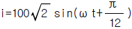
[A]의 크기와 편각은?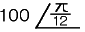
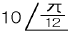
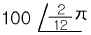
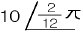
(정답률: 61%)
6. 그림과 같은 연산증폭기의 전압 증폭도는 얼마인가?(오류 신고가 접수된 문제입니다. 반드시 정답과 해설을 확인하시기 바랍니다.)
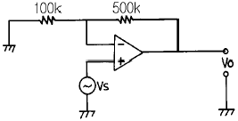
- 2
- 4
- 6
- 8
(정답률: 53%)
7. 반송파 전력이 30kW일 때 변조도 90%로 진폭 변조 했을 때 피변조파의 전력은 약 몇 kW 인가?
- 12
- 21
- 24
- 42
(정답률: 30%)
8. 리플전압이란 어떤 전압을 말하는가?
- 정류된 직류전압
- 부하시의 전압
- 무부하시의 전압
- 정류된 전압의 교류분
(정답률: 66%)
9. 그림에서 R을 단선시켰을 경우 회로에 흐르는 전류의 변화에 대한 것으로 옳은 것은?
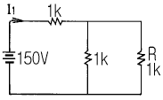
- 변하지 않는다.
- 25㎃ 감소한다.
- 50㎃ 감소한다.
- 75㎃ 감소한다.
(정답률: 46%)
10. 평행판의 정전용량으로 옳은 것은? (단, S: 단면적, d: 판간격, ℓ : 길이, a: 평행판의 두께 εo: 공기 중에서의 유전률이다.)
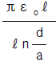
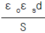
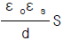
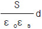
(정답률: 45%)
11. 정류회로에 필요한 최대 입력전압은 몇 V 인가?
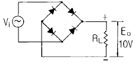
- 2π
- 3π
- 4π
- 5π
(정답률: 40%)
12. 반도체 정류기에서 1V 순바이어스 전압에 대해 10mA의 전류가 흐르고, 1V 역바이어스 전압에 대해 4㎂의 전류가 흘렀다면 정류비는?
- 250
- 350
- 2500
- 3500
(정답률: 52%)
13. 차동 증폭기에서 두 입력 전압이 각각 v1= 50μV, v2= -50μV일 때 출력전압은 몇 μV 인가? (단, Ad 는 차신호이득이며 CMRR= 100 이다.)
- 50
- 100Ad
- 200Ad
- ∞
(정답률: 50%)
14. FM방식에서 변조를 깊게 했을 때 최대 주파수편이가 △fm이라면 필요한 주파수 대역폭 B는?(오류 신고가 접수된 문제입니다. 반드시 정답과 해설을 확인하시기 바랍니다.)
- B = △fm
- B = 2△fm
- B = 4△fm
- B = 0.5△fm
(정답률: 31%)
15. 그림은 CR 발진회로이다. 발진기의 주파수는?
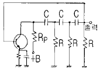
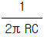
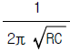
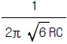
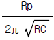
(정답률: 49%)
2과목: 전자계산기일반
16. 멀티바이브레이터의 단안정, 무안정, 쌍안정은 무엇으로 결정되는가?
- 바이어스 전압의 증감
- 전원전압의 크기
- 결합회로의 구성
- 컬렉터 전류
(정답률: 76%)
17. 1024 × 8bit의 용량을 가진 ROM에서 address bus와 data bus의 필요한 선로 수는?
- address bus=8선, data bus=8선
- address bus=8선, data bus=10선
- address bus=10선, data bus=8선
- address bus=1024선, data bus=8선
(정답률: 73%)
18. I/O 장치와 주기억 장치를 연결하는 역할을 담당하는 부분은?
- bus
- buffer
- channel
- device
(정답률: 53%)
19. 조건에 따라 처리를 반복 실행하는 흐름도(flowchart)의 기본형은?
- 분기형
- 분류형
- 직선형
- 루프형
(정답률: 58%)
20. 기억장치의 주소를 4비트(bit)로 구성할 경우 나타낼 수 있는 최대 경우의 수는?
- 8
- 16
- 32
- 64
(정답률: 74%)
21. 디지털 시스템에서 사용되는 음수의 표현 방법으로 옳지 않은 것은?
- 1의 보수
- 2의 보수
- LRC 기법
- 부호와 절대값
(정답률: 56%)
22. 마이크로프로세서에서 산술연산, 논리연산, 시프트 동작 등을 수행하는 것은?
- ACC
- ALU
- Latch
- Register
(정답률: 76%)
23. 주기억장치 상에 부여된 고유 번지를 의미하는 주소는?
- 직접 주소
- 간접 주소
- 상대 주소
- 절대 주소
(정답률: 51%)
24. 다음 연산 중 특정 비트나 비트들의 무리들을 선택적으로 클리어 시키는데 사용되는 것은?
- OR 연산
- AND 연산
- EX-OR 연산
- COMPLEMENT 연산
(정답률: 45%)
25. 하나의 입력 자료를 갖는 단일 연산으로 컴퓨터 내부에서 하나의 레지스터에 기억된 데이터를 다른 레지스터로 옮기는데 이용되는 것은?
- MOVE
- Complement
- AND
- OR
(정답률: 88%)
26. CPU에 있는 내용을 Memory에 저장하는 것을 (①)라 하고 Memory에 있는 내용을 CPU로 가져오는 것을 (②)라 한다. 이때 ①, ②에 들어갈 말은?
- ① LOAD, ② BRANCH
- ① STORE, ② LOAD
- ① LOAD, ② STORE
- ① BRANCH, ② STORE
(정답률: 69%)
27. 그림의 스위치 회로와 관련이 있는 논리 게이트는?
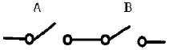
- OR 게이트
- AND 게이트
- NOT 게이트
- EX-OR 게이트
(정답률: 71%)
28. 컴퓨터가 직접 인식하여 실행할 수 있는 언어로 "0"과 "1"만을 사용하여 명령어와 데이터를 나타내는 언어는?
- 기계어
- 어셈블리 언어
- 컴파일 언어
- 인터프리터 언어
(정답률: 85%)
29. 피측정량과 일정한 관계가 있는 몇개의 서로 독립된 양을 측정하고, 그 결과로부터 계산에 의하여 피측정량을 구하는 방법은?
- 직접 측정법
- 간접 측정법
- 편위법
- 영위법
(정답률: 60%)
30. 그림과 같은 파형이 오실로스코프에 나타났을 때 위상은 어떻게 되는가?
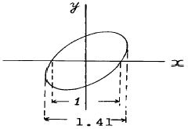
- 동위상
- 45°
- 90°
- 180°
(정답률: 68%)
3과목: 전자측정
31. 오실로스코프로 파형 관측시 시간축 톱니파를 피측정 전압에 동기시키는 이유는?
- 파형을 크게 하기 위하여
- 파형을 선명하게 하기 위하여
- 파형을 밝게 하기 위하여
- 파형을 정지시키기 위하여
(정답률: 39%)
32. 직류와 교류를 같은 눈금으로 측정할 수 있는 정밀급 계기이지만 외부 자계의 영향을 받기 쉬운 계기는?
- 가동철편형 계기
- 가동코일형 계기
- 전류력계형 계기
- 정전형 계기
(정답률: 49%)
33. (-)방향의 전류에 대해서는 무한대 저항이고, (+)방향의 전류에 대해서는 저항값이 0인 저항을 가져야 하는 특성을 가진 것은?
- 증폭기
- 검파기
- 위상기
- 전류 측정기
(정답률: 46%)
34. DC 전용으로 쓰이면서 균등 눈금인 계기는?
- 회로시험기 전압계
- 가동코일형 전압계
- 정전형 전압계
- 회로시험기 저항계
(정답률: 40%)
35. P형 진공관 전압계의 구성부가 아닌 것은?
- 정류부
- 증폭부
- 전원부
- 발진부
(정답률: 47%)
36. 레벨계의 눈금이 있는 회로계로 전압을 측정하였더니 10[dB]였다. 이 때의 전압은? (단, 레벨계는 저주파를 600[Ω ]의 저항에 가하여 1[mW]를 소비할 때의 전압을 기준으로 한다. )
- 0.24[V]
- 2.4[V]
- 24 [V]
- 240[V]
(정답률: 43%)
37. 10[㏁]의 고 절연물을 측정하는데 적당한 측정법은?
- 코올라우시 브리지법
- 전압강하법
- 직접편위법
- 휘이스토운 브리지법
(정답률: 30%)
38. 교번 자속과 맴돌이 전류의 상호 작용을 이용한 계기는?
- 전류력계형 계기
- 유도형 계기
- 가동철편형 계기
- 가동코일형 계기
(정답률: 65%)
39. 계수형 주파수계에서 각 부의 오동작 유曺무를 확인하는 회로는?
- 리셋(Reset) 회로
- 표시시간 조정회로
- 자기 교정회로
- 게이트 시간 절환회로
(정답률: 63%)
40. 정현파와 구형파 발진기에서 정현파가 만들어진 상태에서 구형파를 출력하기 위하여 사용되는 회로는?
- 적분 회로
- 미분 회로
- 필터(Filter) 회로
- 시미트 트리거(Schmitt trigger) 회로
(정답률: 73%)
41. 유전가열은 어떤 원리를 이용하여 가열하는 방식인가?
- 유전체손
- 표피작용에 의한 손실
- 히스테리시스 손
- 맴돌이 전류 손
(정답률: 54%)
42. 음파의 속도 V는? (단, 기체나 액체의 체적탄성율 K, 물질의 밀도 ρ 이다.)
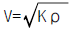
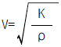
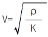
- V=Kρ
(정답률: 68%)
43. 초음파 측심기로 물의 깊이를 측정할 때 옳은 식은? (단, v : 초음파속도, t : 시간)
- h =(vt)/2
- h = vt
- h = 2vt
- h =2/(vt)
(정답률: 73%)
44. 제어하려는 양을 목표에 일치시키기 위하여 편차가 있으면 그것을 검출하여 정정 동작을 자동으로 행하는 것을 의미하는 것은?
- 제어 대상
- 설정값
- 제어량
- 자동 제어
(정답률: 77%)
45. 사이클링과 오프셋(offset)이 제거되고 응답속도가 빠르며 안정성이 좋은 제어동작은?
- 온 오프 동작
- P 동작
- PI 동작
- PID 동작
(정답률: 39%)
4과목: 전자기기 및 음향영상기기
46. 제어량의 종류에 따른 자동제어계의 분류에서 자동조정 제어량의 종류에 해당되지 않는 것은?
- 속도
- 온도
- 전압
- 전류
(정답률: 55%)
47. 다음 블록선도의 전달함수는?
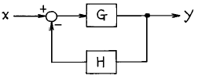
- 1/(G+H)
- 1/(1+GH)
- G/(1-GH)
- G/(1+GH)
(정답률: 49%)
48. 전자 냉동기는 다음 어떤 효과를 응용한 것인가?
- 제에백 효과(Seebeck effect)
- 펠티어 효과(Peltier effect)
- 톰슨 효과(Thomson effect)
- 주울 효과(Joule effect)
(정답률: 87%)
49. 송신측의 변조신호를 어느 정도까지 충실하게 재현할 수 있는지, 그 정도를 나타내는 양을 무엇이라고 하는가?
- 감도
- 선택도
- 안정도
- 충실도
(정답률: 80%)
50. 수우퍼 헤테로다인 수신기에서 중간 주파 증폭을 하는 이유로 거리가 먼 것은?
- 전압 변동을 적게 하기 위해
- 선택도를 높이기 위해
- 충실도를 높이기 위해
- 안정한 증폭으로 이득을 높이기 위해
(정답률: 42%)
51. 라디오 수신기의 증폭기에서 중역대 증폭도를 A라 하면 저역차단 주파수의 증폭도는 A의 몇 배인가?
- 2
- 1/2
- √2
- 1/√2
(정답률: 41%)
52. FM 수신기의 고주파 증폭에 전계효과 트랜지스터가 사용되는 주된 이유는?
- 입력 임피던스가 높기 때문에
- 증폭률이 높기 때문에
- 고주파 특성이 우수하기 때문에
- 회로 설계가 용이하기 때문에
(정답률: 42%)
53. 수신기의 신호대 잡음비(S/N)를 좋게 하는 것은?
- 중간 주파 대역폭을 넓힌다.
- 저주파 대역폭을 넓힌다.
- RF 동조 회로의 Q를 낮춘다.
- RF 동조 회로의 Q를 높인다.
(정답률: 34%)
54. 비선형 증폭기에서 일그러짐율이 1[%]라면 몇 ㏈인가?
- -40
- -50
- +60
- +70
(정답률: 57%)
55. -80[㏈]의 감도를 가진 마이크로폰에 1[μ bar]의 음압을 주었을 때 출력전압은 몇[㎷]인가?
- 10
- 1
- 0.1
- 0.01
(정답률: 46%)
56. 비디오 신호를 기록 재생하기 위하여 필요한 조건이 아닌 것은?
- 비디오 헤드의 크기를 작게 한다.
- 비디오 헤드의 갭을 좁게 한다.
- 비디오 헤드와 자기테이프의 상대속도를 크게 한다.
- 비디오 신호를 변조해서 기록한다.
(정답률: 43%)
57. 수신기의 종합특성에 해당되지 않는 것은?
- 감도
- 충실도
- 선택도
- 변조도
(정답률: 62%)
58. SN 비가 40[㏈]이라고 할 때, 신호가 포함된 잡음이 신호 전압의 얼마임을 가르키는가?
- 1/10
- 1/100
- 1/1000
- 1/10000
(정답률: 65%)
59. 태양 전지에서 음극 단자가 연결된 부분의 구성 물질은?
- P 형 실리콘
- N 형 실리콘
- 셀렌
- 붕소
(정답률: 78%)
60. 조절계에서 P동작이라고 하는 것은?
- 온/오프 동작
- 비례 동작
- 적분 동작
- 미분 동작
(정답률: 57%)